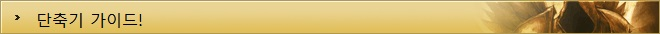

디아블로3 가이드
| 기초정보 | 인터페이스 | 단축키 | 퀘스트 |
|---|---|---|---|
| 제작 | 대장장이 | 보석공 | 점술가 |
| 기타 | 직업선택 | 지도 | |

단축키는 자주 쓰는 명령어나 행동을 특정한 키보드 버튼 클릭 한 번으로 실행할 수 있게 해주는 키로서, 대부분의 다른 게임과 마찬가지로 디아블로 또한 유저의 취향대로 단축키를 설정하는 것이 가능하다.
단축키를 설정하려면 '게임 메뉴'로 들어간 후에 '단축키' 항목을 선택하면 되는데, 게임 메뉴는 캐릭터 로그인 화면에서 메뉴 아이콘을 클릭하거나, 게임 접속 후에 Esc버튼을 누르거나, 자원 구슬 왼쪽에 위치하고 있는 컴퓨터 모양 아이콘을 클릭하면 들어갈 수 있다.
명령어는 단축키로 실행시킬 명령어를 뜻하며, 키1 과 키2는 단축키로 등록할 버튼을 의미하는데 어떤 키를 누르던 단축키가 작동하며, 꼭 2개 전부 설정할 필요는 없으므로 편한대로 설정하자.
단축키는 단일 키뿐만 아니라, Shift, Ctrl, Alt 등의 조합키와 조합해서 적용이 가능하므로 단축키가 모자라다면 조합키를 적극적으로 활용하도록 하자( 예시 : Shift + X ).
단, 회색으로 된 단축키는 설정이 불가능하므로 주의하자.
예를 들어 퀘스트 창을 여는 단축키 Q가 설정되어 있는 상태에서, 기술 창을 여는 단축키를 Q로 설정하게 되면, 기술 창 단축키는 Q로 지정이 되지만, 퀘스트 창 단축키는 공백으로 남게 된다.
취소 버튼을 누를 경우 입력해 놓은 단축키 설정이 날아가서 처음부터 다시 설정해야 하므로, 단축키가 원하는 대로 설정이 되었다면 적용 버튼 ▶ 수락 버튼을 누르거나, 바로 수락버튼을 누르자.
TOP